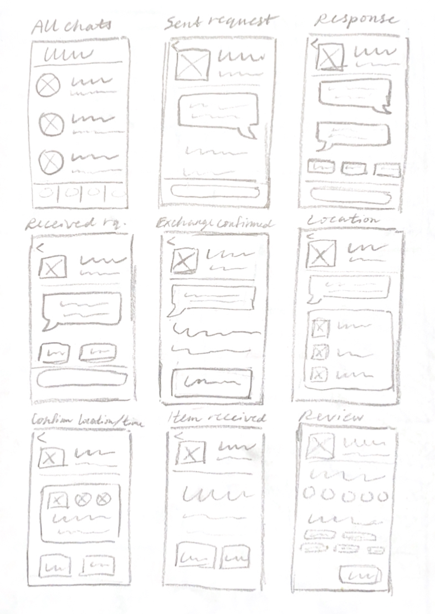

Pass it Forward
February 2025 – Present
Wireframing, iterative design, competitive analysis, user interviews, user testing

In a team of five, we decided to design a better app for giving away and claiming free items within your local community. This project is currently in progress in the mid-fi stages.
What I did:
Why:
Most online groups for giving away free items are hosted on social media platforms like Facebook or Nextdoor. We wanted to design an app that is geared specifically towards this experience with the goal of bringing people together within their community, using an online medium as an avenue to foster real life experiences.
Preliminary Research
We first conducted preliminary user interviews and a competitive analysis to determine areas that we should focus on for our app. Through affinity mapping, we identified safety and reliability as the two major concerns of our potential userbase.
Ensuring Safety and Reliability

What sets our app apart is the attention to detail when it comes to ensuring safety and reliability in real-life interactions with other users. One way that we set out to accomplish this was by creating a structured system for choosing meetup locations and times through the app. I designed the flow for this feature as a subset of the app's chat feature. This is my original lo-fi prototype for this flow.
Wireframes


Next, I brought the chat and pickup scheduling feature into the wireframe stage. I made the original iteration (top) based on my lo-fi sketches and with input from my teammates, and then redesigned the flow (bottom) after our first round of user testing. Most notably, I redid the date and time selection system and made changes in verbiage in order to make the pathway clearer to the user. (Open the images in a new tab to see the screens in more detail.)
Current Takeaways and Next Steps
So far in this project, I have gained a lot of experience in iterative design and prototyping and testing at various stages. Next, I will begin building our design system for our hi-fi prototype and we will conduct more stages of user testing before presenting our final product.